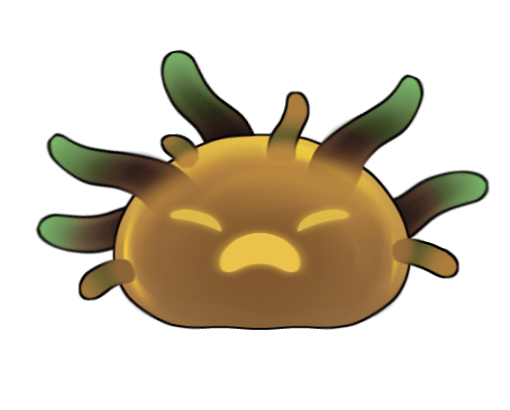
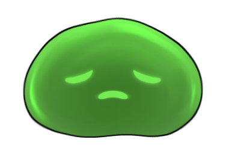
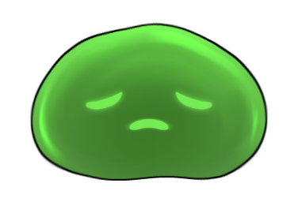
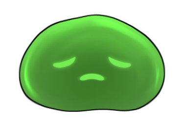

Description
Endure The Lost Realm is a thrilling, endless-flying adventure that takes inspiration from the classic game Flappy Bird. Players guide a charming, pixelated character through a series of challenging obstacles in a vibrant, ever-changing sky. With simple yet addictive gameplay, the objective is to navigate between the moving obstacles, earn high scores, and unlock new characters. Endure The Lost Realm combines fast-paced action with delightful visuals, offering endless fun and competition for players of all ages.
How To Play
Welcome to Endure The Lost Realm! Here's a quick guide to get you started:
- Tap the Screen: Tap anywhere on the screen using your mouse click to make your character jump and hold click to rise.
- Avoid Enemies: Navigate your character through gaps between enemies. Avoid hitting them to stay in the game.
- Increasing Difficulty: As you progress, the enemies will become more closely spaced, making the game more challenging.
- Timing is Key: Pay close attention to your character's altitude and adjust your tapping rhythm to guide it through the map effectively.
- Energy Bar: Monitor the energy bar on the left side of the screen. This indicates your character's remaining energy and can be crucial for survival.
- Dash Forward: Use the 'Shift' button to dash your character forward using energy. This can help you avoid oncoming enemies and navigate tight spaces.
Master these controls and aim for the highest score! Good luck!

 

